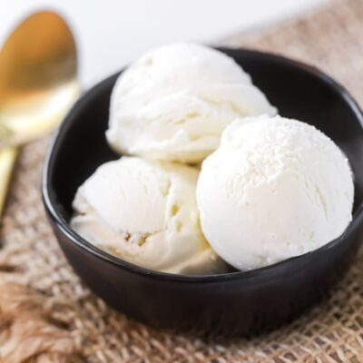

Babes with Cream

Ingredients
- Ice Cream
- Chocolate
- Cream
- scrambled eggs
- In a large bowl, combine the heavy cream and the half and half. Gradually whisk in the sugar until blended.
- Whisk in the vanilla. Refrigerate, covered, until very cold, at least 3 hours or as long as 3 days.
- Whisk the mixture to blend and pour into the canister of an ice cream maker. Freeze according to the manufacturer's directions. Eat at once or transfer to a covered container and freeze up to 8 hours.